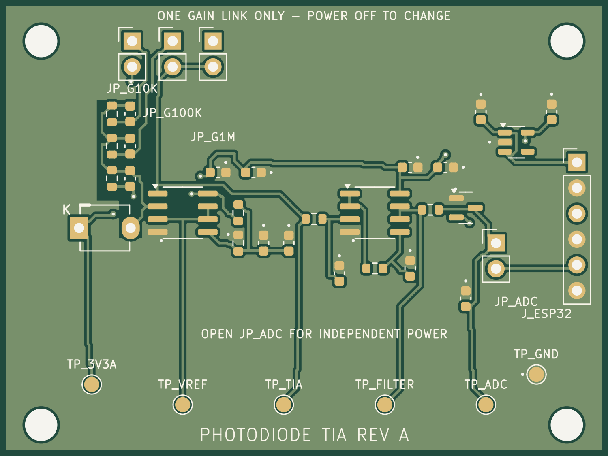
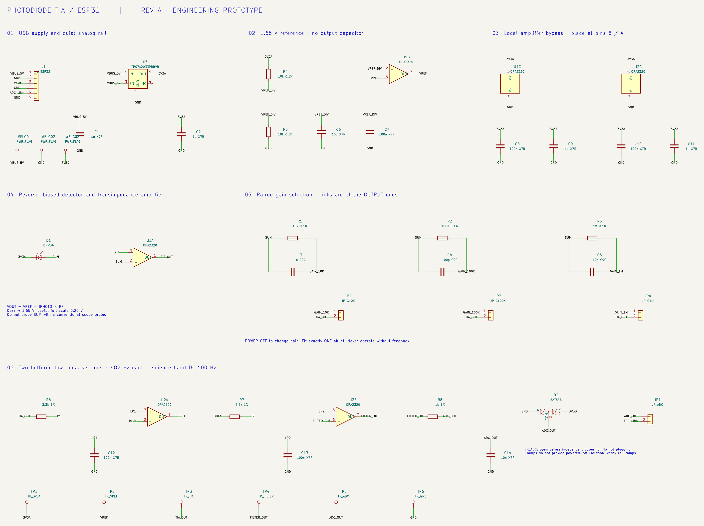
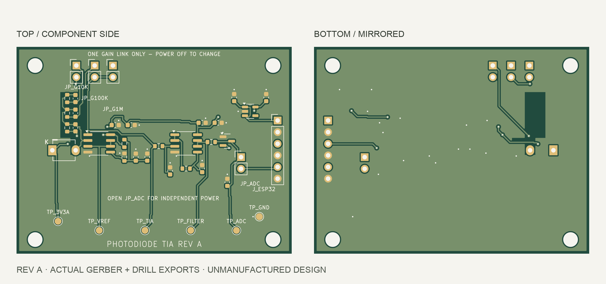
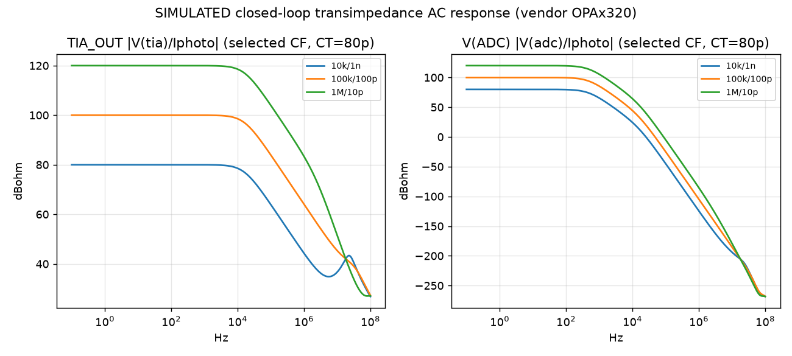

Photodiode TIA & Wireless Optical Sensor
Designed a selectable-gain photodiode front end, two-layer PCB, and ESP32-to-Python acquisition pipeline, supported by LTspice simulation and software checks.

System architecture
- 01 / OPTICAL INPUTLight → BPW34
- 02 / CURRENT TO VOLTAGESelectable-gain TIA
- 03 / CONDITIONINGFiltering + protection
- 04 / DIGITIZATIONESP32 ADC1 / GPIO34
- 05 / SAMPLINGTimer + sample buffer
- 06 / TRANSPORTWebSocket telemetry
- 07 / HOST SOFTWAREPython analysis
- 08 / DATAWaveform · CSV · FFT
Designed signal chain. Firmware and offline software checks passed; end-to-end hardware characterization has not yet been performed.
Overview
Convert photodiode current into a usable voltage, then carry the samples through embedded acquisition, wireless telemetry, and host-side analysis. The BPW34 is the provisional reference detector; the ESP32 DevKit connects through a cable header rather than being fitted to the analog PCB.
Analog front end
OPA2320 amplifiers provide the transimpedance stage, buffered 1.65 V reference, and filter followers. Three paired feedback selections—10 kΩ / 1 nF, 100 kΩ / 100 pF, and 1 MΩ / 10 pF—set the gain and compensation. A TPS7A2033PDBVR regulator supplies the analog rail; a series resistor and BAT54S clamp protect the ADC input.
Simulation & validation
SIMULATED in LTspice using the TI OPAx320 model: approximately 15.9 kHz TIA bandwidth and 309.5 Hz conditioned-system bandwidth. Nominal phase margins are 79.4°, 85.5°, and 90.4° across the selected gains. The analog design gate passed; these are model results, not hardware measurements.
PCB design
The 60 × 45 mm two-layer layout keeps the photodiode/TIA input path short, clusters the feedback pairs, and excludes copper pour around sensitive summing and feedback nodes. Repository verification records clean ERC, DRC, connectivity, and schematic/PCB parity, plus a complete BOM and Gerber/drill package for bare-board prototype fabrication.
Firmware
ESP32 ADC1 / GPIO34 acquisition is driven by a hardware timer and buffered separately from WebSocket telemetry. Firmware is configured for 4 kS/s by default, with sample-loss accounting and timestamps. The pinned PlatformIO build passed; actual sampling timing and wireless throughput have not been verified on hardware.
Python analysis
Host tools provide waveform viewing, CSV recording, FFT, dark/no-signal noise analysis, and gain/frequency-response workflows. Seven offline tests and a synthetic capture-to-FFT smoke check are recorded as passing on September 29, 2026. Synthetic data validates software behavior; it is not measured optical performance.
Project status
DESIGN / SIMULATION / PCB / SOFTWARE COMPLETE. Revision A is fabrication-ready as a bare-board prototype. Hardware characterization: Not yet performed. Component qualification, assembly, ADC calibration, and bench validation remain the next steps.
Actual KiCad schematic


Fabrication layers


LTspice AC response


Inside the code
SOURCE SNAPSHOTSvoid configureTimerAlarm(uint32_t hz) {
// 40 MHz timer ticks avoid microsecond rounding at arbitrary rates.
timerAlarmWrite(g_timer, (40000000ULL + hz / 2) / hz, true);
}
void IRAM_ATTR onTimerAlarm() {
BaseType_t highTaskAwoken = pdFALSE;
vTaskNotifyGiveFromISR(g_acqTaskHandle, &highTaskAwoken);
if (highTaskAwoken) portYIELD_FROM_ISR();
}